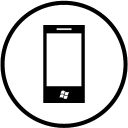

How do i get my current weather?
How do i get my current location?
How do i get Route to a point?
How do i change my current language?
How do i get my current mobile number?
How do i get disable notifications?
How do i contact the nearest emergency service?
How do i share an incident with other pastorialists?
How do i communicate with other pastorialists?
How can i disseminate innformation to other pastorialists?
How do i report a disease outbreak to the appropriate recipients pastorialists?
How do i identify restricted areas on the map?
How can i identify grazeable land in the map?
How can i interprete the weather icons to know my exact weather?